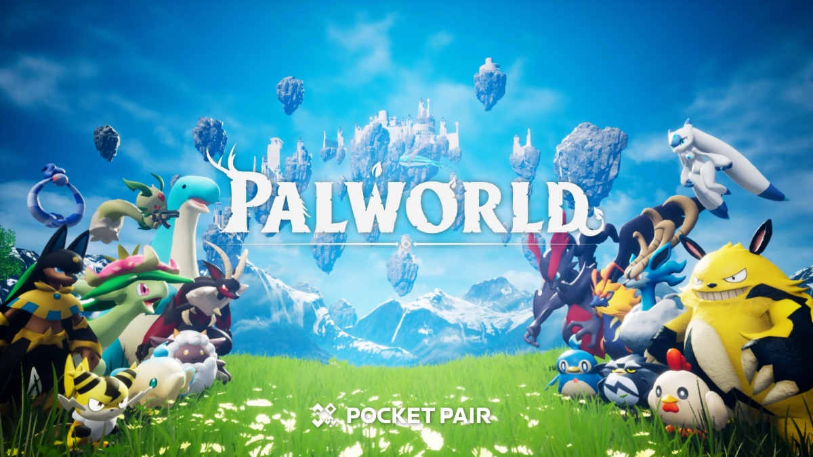

PALWORLD
Este es un juego multijugador de supervivencia en mundo abierto inmenso y original, en el que tendrás que hacerte con unas misteriosas criaturas llamadas Pals, capaces de combatir, construir, cultivar y trabajar en fábricas
- multijugador
- mundo abierto
- supervivencia